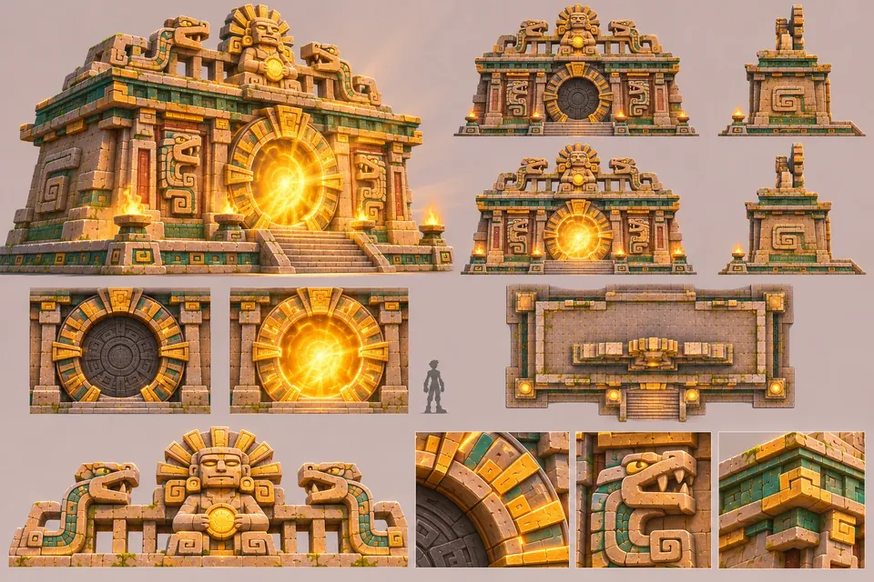
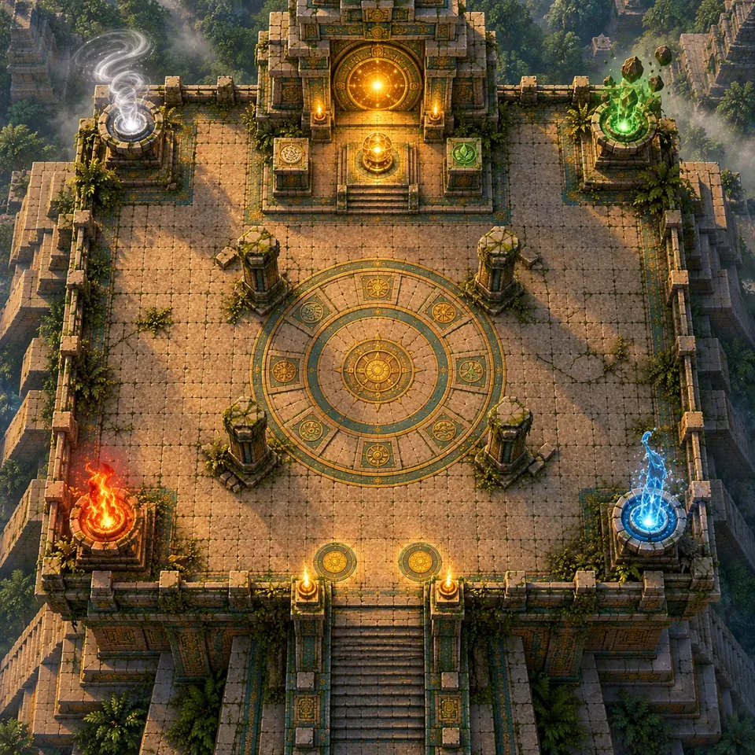
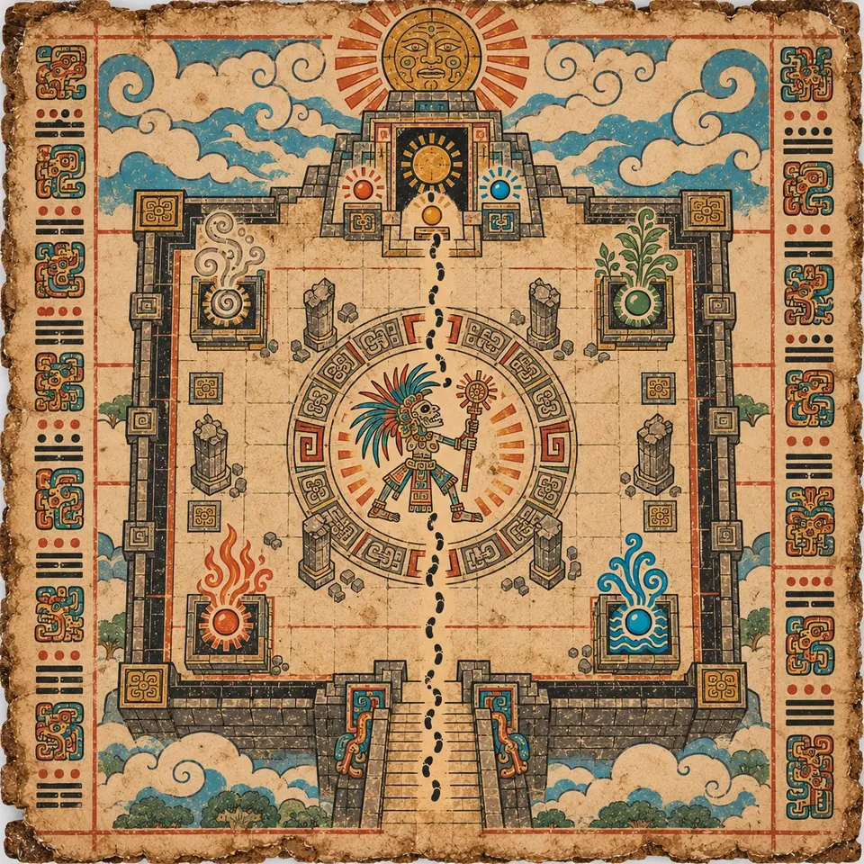
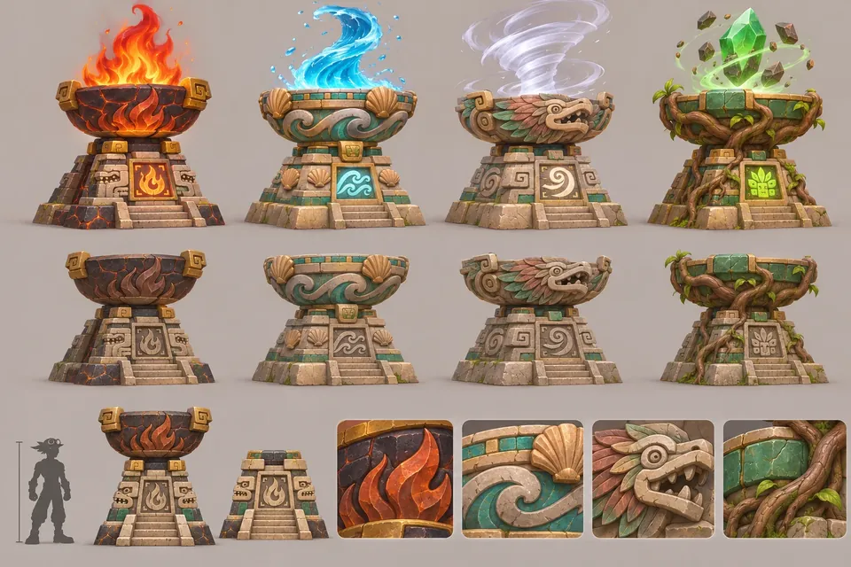
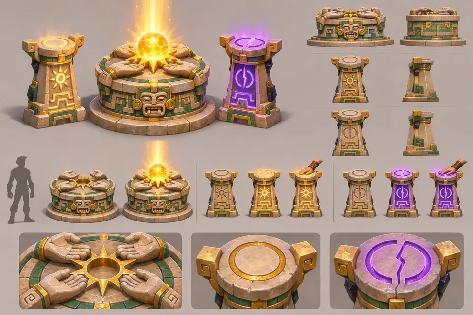

SKY-01
“The cycle begins again… unless you break it.”
K'in
The summit is the only floor under the open sky: a circular glyph arena with four broken columns, four great braziers in the corners, red for fire, blue for water, white for wind and green for earth, and the small summit temple with the dark Sun Portal.


The Hollow High Priest, the order's former head, waits on the plateau with four stolen lights circling in his open ribcage. His boss phases are played on the braziers: each one ties the fight to an element the party has learned on the way up. With a full party, each Climber lights the brazier of an orb they own.
The Sun Orb goes on the altar before the Sun Portal. Two pedestals flank it: gold to restore the cycle, violet to break it. Each Climber steps onto one, and the majority decides. What each choice costs is told in the story.
After the first summit, the Trials of the Shifting Temple are open for every tier, all the way to the top.

SKY-01

SKY-02

SKY-03